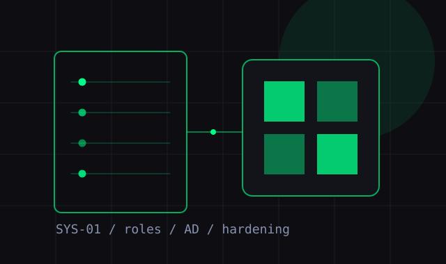
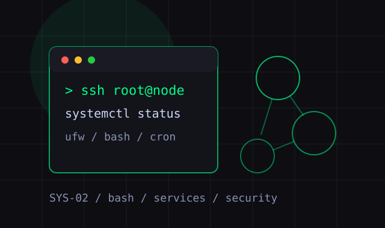
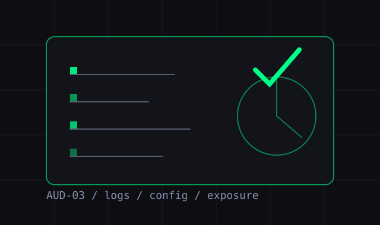
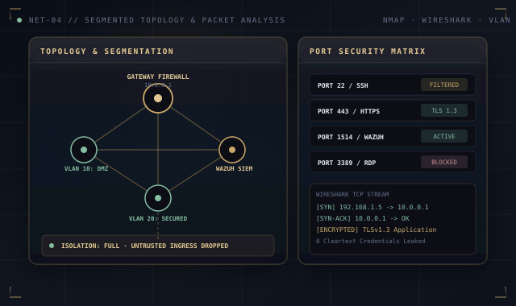
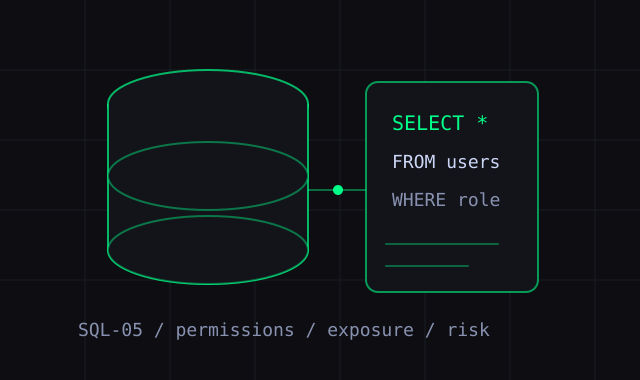

[ SYS-01 ]
Windows Server
Creacion, configuracion y gestion de servidores Windows, roles, usuarios, permisos, politicas y hardening base.
// 01 - sobre mi
Especializado en ciberseguridad defensiva y ofensiva, con experiencia en analisis de vulnerabilidades, pentesting web y hardening de sistemas Linux.
Combino mentalidad de atacante con disciplina de defensor. Cada sistema que analizo lo hago con el objetivo de entenderlo desde adentro.
Actualmente en busqueda de proyectos donde la seguridad no sea un afterthought, sino parte del diseno.
// capacidades detectadas

[ SYS-01 ]
Creacion, configuracion y gestion de servidores Windows, roles, usuarios, permisos, politicas y hardening base.

[ SYS-02 ]
Despliegue, administracion y gestion de servicios Linux, permisos, SSH, automatizacion con Bash y bastionado.

[ AUD-03 ]
Revision de configuraciones, exposicion, logs, permisos, vulnerabilidades y buenas practicas de seguridad.

[ NET-04 ]
Analisis de topologia, puertos, servicios, trafico, segmentacion y superficie expuesta en redes.

[ SQL-05 ]
Revision de permisos, configuracion, exposicion, consultas inseguras y riesgos comunes en bases de datos SQL.